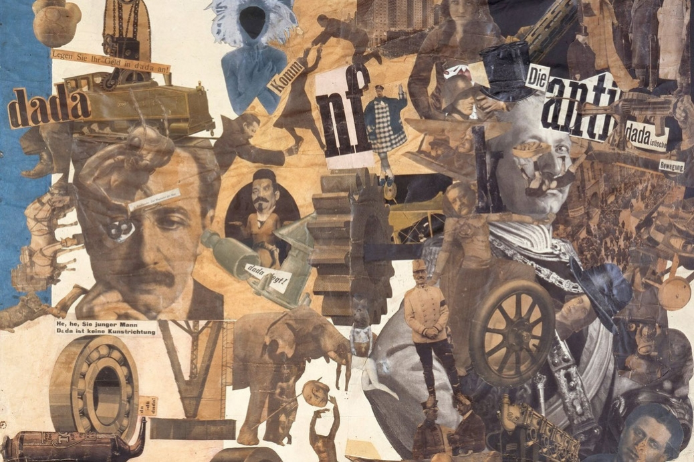

"Per lanciare un manifesto bisogna volere: A, B, C, scagliare invettive contro 1, 2, 3, eccitarsi e aguzzare le ali per conquistare e diffonder grandi e piccole a, b, c, firmare, gridare, bestemmiare, imprimere alla propria prosa l'accento dell'ovvietà assoluta, irrifiutabile, dimostrare il proprio non-plus-ultra e sostenere che la novità somiglia alla vita tanto quanto l'ultima apparizione di una cocotte dimostri l'essenza di Dio.
Scrivo un manifesto e non voglio niente, eppure certe cose le dico, e sono per principio contro i manifesti, come del resto sono contro i principi (misurini per il valore morale di qualunque frase). Scrivo questo manifesto per provare che si possono fare contemporaneamente azioni contradittorie, in un unico refrigerante respiro; sono contro l'azione, per la contraddizione continua e anche per l'affermazione, non sono nè favorevole nè contrario e non dò spiegazioni perchè detesto il buon senso.
DADA non significa nulla.
Se lo si giustifica futile e non si vuol perdere tempo per una parola che non significa nulla. Il primo pensiero che ronza in questi cervelli è di ordine batteriologico: trovare l'origine etimologica, storica, o per lo meno psicologica. Si viene a sapere dai giornali che i negri Kru chiamano la coda di una vacca sacra DADA. Il cubo e la madre di non so quale regione italiana: DADA. Il cavallo a dondolo, la balia, doppia conferma russa e romena: DADA . Alcuni giornalisti eruditi ci vedono un arte per i neonati, per latri santoni, versione attuale di Gesùcheparlaaifanciulli, è il ritorno ad un primitivismo arido e chiassoso, chiassoso e monotono. Non si può costruire tutta la sensibilità su una parola, ogni costruzione converge nella perfezione che annoia, idea stagnante di una palude dorata, prodotto umano relativo.
L'opera d'arte non deve rappresentare la bellezza che è morta. Un'opera d'arte non è mai bella per decreto legge, obiettivamente, all'unanimità. La critica è inutile, non può esistere che soggettivamente, ciascuno la sua, e senza alcun carattere di universalità. Si crede forse di aver trovato una base psichica comune a tutta l'umanità? Come si può far ordine nel caos di questa informa entità infinitamente variabile: l'uomo? Parlo sempre di me perchè non voglio convincere nessuno, non ho il diritto di trascinare gli altri nella mia corrente, non costringo nessuno a seguirmi e ciascuno si fa l'arte che gli pare.Così nacque DADA da un bisogno d'indipendenza. Quelli che dipendono da noi restano liberi. Noi non ci basiamo su nessuna teoria. Ne abbiamo abbastanza delle accademie cubiste e futuriste: laboratori di idee formali: Forse che l'arte si fa per soldi e per lisciare il pelo dei nostri cari borghesi? Le rime hanno il suono delle monete. Il ritmo segue e il ritmo della pancia vista di profilo.
Tutti i gruppi di artisti sono finiti in banca, cavalcando differenti comete. Una porta aperta ha la possibilità di crogiolarsi nel caldo dei cuscini e nel cibo. Il pittore nuovo crea un mondo i cui elementi sono i suoi stessi mezzi, un'opera sobria e precisa, senza oggetto. L'artista nuovo si ribella: non dipinge più (riproduzione simbolica e illusionistica) ma crea direttamente con la pietra, il legno, il ferro, lo stagno, macigni, organismi, locomotive che si possono voltare da tutte le parti, secondo il vento limpido della sensazione del momento.
Qualunque opera pittorica o plastica è inutile; che almeno sia un mostro capace di spaventare gli spiriti servili, e non la decorazione sdolcinata dei refettori degli animali travestiti da uomini, illustrazioni della squallida favola dell'umanità .Un quadro è l'arte di fare incontrare due linee, parallele per constatazione geometrica, su una tela, davanti ai nostri occhi, secondo la realtà di un mondo basato su altre condizioni e possibilità. Questo mondo non è specificato, nè definito nell'opera, appartiene alle sue innumerevoli variazioni allo spettatore.
La spontaneità dadaista.
L'arte è una cosa privata. L'artista lo fa per se stesso. L'artista, il poeta, apprezza il veleno della massa che si condensa nel caporeparto di questa industria. E' felice quando si sente ingiuriato: una prova della sua incoerenza. Abbiamo bisogno di opere forti, dirette e imcomprese, una volta per tutte. L a logica è una complicazione. La logica è sempre falsa. Tutti gli uomini gridano: c'è un gran lavoro distruttivo, negativo da compiere: spazzare, pulire. Senza scopo nè progetto alcuno, senza organizzazione: la follia indomabile, la decomposizione. Qualsiasi prodotto del disgusto suscettibile di trasformarsi in negazione della famiglia è DADA; protesta a suon di pugni di tutto il proprio essere teso nell'azione distruttiva: DADA; presa di coscienza di tutti i mezzi repressi fin'ora dal senso pudibondo del comodo compromesso e della buona educazione: DADA ; abolizione della logica; belletto degli impotenti della creazione: DADA ; di ogni gerarchia ed equazione sociale di valori stabiliti dai servi che bazzicano tra noi: DADA ; ogni oggetto, tutti gli oggetti, i sentimenti e il buoi, le apparizioni e lo scontro inequivocabile delle linee parallele sono armi per la lotta: DADA ; abolizione della memoria: DADA ; abolizione dell'archeologia: DADA ; abolizione dei profeti: DADA ; abolizione del futuro: DADA ; fede assoluta irrefutabile inogni Dio che sia il prodotto immediato della spontaneità: DADA ."
